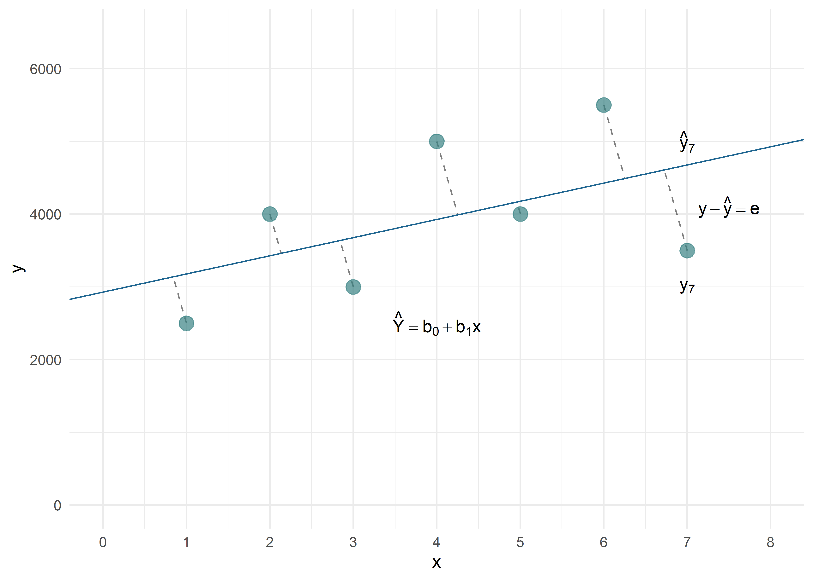

Ventajas | Desventajas |
|---|---|
Se pueden estudiar grandes grupos poblacionales | No se tiene información del individuo,por lo que no se puede ajustar por diferencias a nivel individual |
Relativamente fáciles de realizar | No se puede saber quién sí está expuesto o quién sí desarrolló el evento de interés |
Aumenta el poder estadístico | No se tiene información sobre factores de confusión y no se puede corregir por esto |
Aumenta la variabilidad en exposición | |
Se puede utilizar información de estadísticas vitales |
Estudios ecológicos
Este material es parte de la Unidad 3 del Curso de Epidemiología - Nivel Avanzado del Instituto Nacional de Epidemiología “Dr. Juan H. Jara” - ANLIS
Estudios ecológicos by Andrea Silva, Christian Ballejo y Tamara Ricardo is licensed under CC BY-NC 4.0 


Introducción
Por definición, un estudio ecológico es aquel en el cual las unidades de análisis son poblaciones o agrupamientos de individuos, no los individuos propiamente dichos. Estos conglomerados pueden estar definidos en un contexto espacial (ciudad, provincia, país, región, etc), institucional (hospitales, escuelas, etc), social, temporal, etc. La característica principal de este tipo de diseños es que se cuenta con información sobre la exposición y el evento para el conglomerado en su totalidad, pero se desconoce la información a escala individual. En este tipo de estudios se asigna la misma exposición (generalmente una exposición promedio) a todo el conglomerado. Algo similar ocurre con el evento considerado, tenemos un número de eventos correspondiente al conglomerado, pero no se sabe si los individuos expuestos son los que tienen el evento.
Repasemos las principales ventajas y desventajas de este diseño:
Recordemos también que puede incurrirse en la llamada falacia ecológica.
Falacia ecológica (ecological fallacy)
Sesgo que puede aparecer al observar una asociación a partir de un estudio ecológico pero que no representa una asociación causal a nivel individual.
En un estudio ecológico, existen distintos niveles de medición de las variables de grupo:
Medidas agregadas. Se trata de resumir las observaciones sobre individuos en cada grupo, expresándolas como medias o proporciones (ejemplo la proporción de usuarios de cinturón de seguridad).
Mediciones ambientales. Son características generalmente del lugar en el que los miembros del grupo viven o trabajan (ejemplo: niveles de contaminación ambiental). Cada medición ambiental tiene su análogo a nivel individual y la exposición individual puede variar dentro del grupo.
Mediciones globales. Son características de grupos, organizaciones o áreas para las que no existe una analogía con el nivel individual (ejemplo: densidad de población).
Esta distinción es importante, porque para las dos primeras siempre existe el recurso de la medición individual, en tanto que en las mediciones globales, el diseño ecológico es la única alternativa viable.
Clasificación de estudios ecológicos
Exploratorios.
De grupos múltiples
De series de tiempo
Mixtos
Exploratorios: En los estudios exploratorios se comparan las tasas de enfermedad entre muchas regiones durante un mismo periodo, o se compara la frecuencia de la enfermedad a través del tiempo en una misma región. Se podría decir que se buscan patrones regionales o temporales, que pudieran dar origen a alguna hipótesis.
Estudios de grupos múltiples: Este es el tipo de estudio ecológico más común. Se evalúa la asociación entre los niveles de exposición promedio y la frecuencia de la enfermedad entre varios grupos. La fuente de datos suele ser las estadísticas de morbilidad y mortalidad rutinarias.
Estudios de series temporales: Se comparan las variaciones temporales de los niveles de exposición con otra serie de tiempo que refleja los cambios en la frecuencia de la enfermedad en la población de un área geográfica determinada.
Estudios mixtos: En esta categoría se incluyen los estudios de series de tiempo combinadas con la evaluación de grupos múltiples.
Algunos autores presentan la perspectiva que mostramos en la siguiente tabla, para una comprensión más rápida de las distintas posibilidades de los diseños ecológicos:
Tipo | Diseño | Marco de tiempo |
|---|---|---|
Transversal | A lo largo de diferentes comunidades | Mismo período |
Series temporales | Dentro de la misma comunidad | A lo largo del tiempo |
Descriptivo | A lo largo de diferentes comunidades o dentro de la misma comunidad | Un punto en el tiempo o a lo largo del tiempo |
Análisis de estudios ecológicos
Antes de entrar en este campo, tenemos que señalar que existen distintos niveles de análisis en estos estudios.
En un análisis ecológico completo, todas las variables son medidas ecológicas (exposición o exposiciones, enfermedad u otras variables incluidas), ya que la unidad de análisis es el grupo. Ello implica que desconocemos la distribución conjunta de cualquier combinación de variables a nivel individual.
En un análisis ecológico parcial de tres o más variables puede tenerse información de la distribución conjunta de alguna de las variables en cada grupo. Por ejemplo, en el estudio de incidencia de cáncer se conocen la edad y el sexo de los casos (información individual) pero la exposición derivada de la residencia en un área concreta (municipio) es información ecológica.
El análisis multinivel es un tipo especial de modelización que combina el análisis efectuado a dos o más niveles. Ejemplo: la modelización de la incidencia de cáncer incluyendo el sexo y la edad como variables explicativas, además de variables socio-demográficas.
Como podemos apreciar, tenemos muchas posibilidades para contemplar. En este capítulo, nos centraremos en aquellos estudios ecológicos (completo) donde el objetivo principal sea encontrar una relación entre la exposición y la enfermedad, es decir un estudio de grupos múltiples.
La manera usual de evaluación de la asociación en estudios de grupos múltiples es mediante modelos lineales de regresión, de hecho algunos autores se refieren a estos estudios como “Estudios de correlación”. Dependiendo del diseño y la distribución de los datos se pueden emplear otros modelos no lineales o no aditivos. Como las tasas de morbilidad y mortalidad en las regiones geográficas que se comparan comúnmente son eventos raros o que ocurren a bajas frecuencias, éstos semejan una distribución Poisson; así que la regresión de Poisson también puede ser usada.
En este capítulo abordaremos la regresión lineal simple, a modo de introducción, para luego entender los modelos de regresión lineal múltiple, ampliamente usados en el análisis de los estudios ecológicos, aunque no exclusivos de ellos.
Antes de encarar la regresión lineal múltiple, repasaremos los fundamentos de la correlación y de la regresión lineal simple.
Regresión lineal simple (RLS)
Nuestra pregunta ahora es: ¿cómo podemos estudiar la relación de dos variables cuantitativas que varían simultáneamente (co-varían), una en función de la otra?
AI analizar los datos en las disciplinas que conforman las ciencias de la salud, con frecuencia es conveniente obtener algún conocimiento acerca de la relación entre dos variables. Por ejemplo, es posible que se tenga interés en analizar la relación entre presión sanguínea y edad, estatura y peso, la concentración de un medicamento inyectable y la frecuencia cardíaca, etc (observar que se trata de variables cuantitativas)
La covarianza \(S_{XY}\), es una medida que nos hablará de la variabilidad conjunta de dos variables numéricas (cuantitativas). Se define como:
\[S_{XY} = \frac{1}{n} \sum_{i=1}^{n} (x_i - \bar{x})(y_i - \bar{y}) \]
¿Cómo se interpreta geométricamente la covarianza?
Consideremos la nube de puntos formadas por las \(n\) parejas de datos (\(x_i\), \(y_i\)). El centro de gravedad de esta nube de puntos es (\(\bar{x}\) , \(\bar{y}\)). Trasladamos los ejes XY al nuevo centro de coordenadas. Los puntos que se encuentran en el primer y tercer cuadrante contribuyen positivamente al valor de \(S_{XY}\) , y los que se encuentran en el segundo y el cuarto lo hacen negativamente.
Importante
Si la mayoría de puntos se ubican en el tercer y primer cuadrante: \(S_{XY}\) >0
Si la mayoría de puntos se ubican en el segundo y cuarto cuadrante: \(S_{XY}\) < 0
Cuando los puntos se reparte de modo más o menos homogéneo entre los cuadrantes primero y tercero, y segundo y cuarto, se tiene que \(S_{XY}\) ~ 0.
La covarianza es una medida de la variabilidad común de dos variables (crecimiento de ambas al mismo tiempo o crecimiento de una y decrecimiento de la otra), pero está afectada por las unidades en las que cada variable se mide. Así pues, es necesario definir una medida de la relación entre dos variables, y que no esté afectada por los cambios de unidad de medida. Una forma de conseguir este objetivo es dividir la covarianza por el producto de las desviaciones típicas de cada variable, ya que así se obtiene un coeficiente adimensional, \(r\), que se denomina coeficiente de correlación lineal de Pearson.
\[r = \frac{S_{XY}}{S_xS_y} \] Cuando hacemos un análisis bivariado de nuestros datos, queremos determinar si parece haber una relación entre las dos variables. Con frecuencia encontraremos una relación entre dos variables al construir una gráfica: diagrama de dispersión.
Cuando examinamos un diagrama de dispersión, es necesario estudiar el patrón general de los puntos graficados. Si existe un patrón, debemos señalar su dirección. Es decir, mientras una variable se incrementa, ¿la otra parece aumentar o disminuir? Tenemos que observar si hay datos distantes, que son puntos que se ubican muy lejos de todos los demás.
La correlación trata de establecer la relación o dependencia que existe entre las dos variables que intervienen en una distribución bidimensional. Es decir, determinar si los cambios en una de las variables influyen en los cambios de la otra. En caso de que suceda, diremos que las variables están correlacionadas o que hay correlación entre ellas.
La correlación, como cuantificación del grado de relación que hay entre dos variables, es un valor entre -1 y +1, pasando, por el cero. Hay, por lo tanto, correlaciones positivas y negativas. El signo es, pues, el primer elemento básico a tener en cuenta.
Correlación positiva significa que las variables tienen una relación directa: En este caso, valores pequeños de una variable van asociados a valores también pequeños de la otra; y, paralelamente, valores grandes de una van asociados a valores grandes de la otra.
La correlación negativa la tienen, por el contrario, variables con una relación inversa. En este caso, valores pequeños de una variable van asociados, ahora, a valores grandes de la otra; y, equivalentemente, valores grandes de una van asociados a valores pequeños de la otra.
Lo segundo a tener en cuenta en la correlación es la magnitud. Y esto lo marca el valor absoluto de la correlación. En la magnitud se valora la correlación sin el signo, valorando la magnitud del número puro. Esto significa que cuanto más cerca estemos de los extremos del intervalo de valores posibles: -1 y +1, más correlación tenemos.
¿A partir de qué valores de \(r\) se considera que hay “buena correlación”? La respuesta no es simple. Hay que tener en cuenta la presencia de observaciones anómalas y si la varianza se mantiene homogénea. En reglas generales se acepta que a partir de 0,7 hay una buena relación lineal y que a partir de 0,4 podría existir cierta relación
En resumen
El \(r\) de Pearson es adimensional (su valor no depende de la unidad de medida de X e Y)
Sólo toma valores entre (-1 y +1)
Si \(r\) = 0 no existe asociación lineal entre \(x\) e \(y\) (pero cuidado: puede existir una asociación no-lineal). Cuando las variables son incorrelacionadas (hay independencia entre ellas), entonces \(r\) = 0.
Cuanto más cerca esté \(r\) de 1 o -1 mejor correlación
La primera manera de explorar la relación entre 2 variables, es mediante un gráfico o diagrama de dispersión que nos permite observar cómo se comportan ambas variables. Luego se puede calcular el coeficiente de correlación que nos dice si la relación es lineal y cuál es la fuerza de esta correlación.
La correlación más usada para variables cuantitativas es la correlación de Pearson. Es especialmente apropiada cuando la distribución de las variables es la normal.
Si no se cumple la normalidad o si las variables son ordinales es más apropiado usar la correlación de Spearman o la correlación de Kendall.
Para explicar la forma de esta correlación e incluso predecir los valores que puede alcanzar una variable (dependiente) en función de la otra (independiente) podemos utilizar la regresión lineal. Cuando el análisis lo realizamos con dos variables (una dependiente y otra independiente) utilizamos la regresión lineal simple. Cuando el problema es más complejo y queremos incorporar al análisis más de una variable independiente utilizamos la regresión lineal múltiple, que veremos más adelante.
Veamos un ejemplo:
A partir de los datos de peso (medido en gramos) y edad (medida en semanas luego del nacimiento) de un set de datos ficticio con información de 100 niñas menores de 6 meses se realizó un diagrama de dispersión (“scatter plot”).
Como puede observarse existe una fuerte relación lineal positiva, donde a medida que aumenta la edad aumenta el peso, si bien se observan algunos casos que lo hacen con cierta variación.
En la segunda figura trazamos una recta para describir y cuantificar esta asociación lineal que observamos.
Como recordarán la ecuación de la recta es la siguiente:
\[Y = a + bx\]
Donde a es el punto de intersección de la recta con el eje \(Y\) y \(b\) la pendiente de la recta.

La pendiente de la recta nos está indicando la magnitud y sentido de la variación del peso en función de su edad para este grupo de lactantes. En la ecuación, tanto la pendiente como el origen de la recta, se ponen de manifiesto mediante los coeficientes. Un poco más adelante veremos cómo se calculan y cómo se interpretan.
Nota
El coeficiente de correlación (r de Pearson) nos señala la fuerza y el sentido (según su signo sea + o -) de esta relación lineal.
Modelos de Regresión
Uno de los propósitos de los modelos en estadística es intentar explicar la realidad de la manera más “simple” posible (lo cual no es sinónimo de fácil!), desde su esencia, dejando de lado los elementos que podrían cambiar en distintos momentos (o sea la variabilidad del fenómeno, que algunos autores lo comparan con “el ruido”). Existen algunos eventos en la naturaleza que podemos explicar con total exactitud si conocemos algunos datos, por ejemplo el volumen de un cubo. Con respecto a la caída de un objeto, podríamos predecir con un margen de error casi nulo su velocidad y su trayecto. Los modelos que explican estos fenómenos se llaman “modelos deterministas”. Sin embargo cuando queremos entender la realidad que nos rodea la situación se complica, debido a que aparecen otros factores que provocan que el valor de la variable dependiente no pueda ser explicado o predicho completamente por la/s otra/s variable/s. Los modelos que incorporan el concepto de “error” se denominan “modelos probabilísticos” y constituyen la mayoría de los modelos que se abordan desde la estadística, que también se denominan “modelos de regresión”.
Nota
la principal fuente del “error” se debe a la variabilidad entre individuos propia de la naturaleza (por eso se denomina error aleatorio). Puede haber otras fuentes de error, incluso no detectadas (y que deben ser tenidas en cuenta), como pueden ser errores en la medición, calibración o incluso por mala elección del método.
Un modelo de regresión contiene una función que “une” a la variable \(Y\) (independiente) con \(X\) (dependiente) y el “error aleatorio” (también llamado residuo o error residual). Esta función puede ser lineal o no lineal según la naturaleza y distribución de la variable independiente. El componente sistemático de la regresión es esta función que deseamos “modelar”.
El componente aleatorio es esa parte de la variación de \(Y\) que no puede ser totalmente explicada por la variación de la/s variable/s independiente/s. En algunos casos el error tendrá valor positivo y en otros tendrá valor negativo. El promedio del error es igual a 0.
\[ Y = \underbrace{\beta_0 + \beta_1 X_1}_{Componente \: sistemático} + \underbrace{\epsilon}_{Componente \: aleatorio} \]
Una vez que logremos establecer esta función estaremos en condiciones de:
Saber cómo se comporta la variable respuesta \(Y\) en función de la/s variable/s independientes.
Estimar o predecir el valor de \(Y\) para determinados valores de \(X\)
Calcular el intervalo de confianza para estas predicciones
Vamos a volver al ejemplo del peso en niñas menores de 6 meses, donde habíamos trazado una recta que nos ilustraba la relación lineal del peso en función de la edad.
Según el modelo estadístico para la función lineal de \(Y\) según \(X\):
\[Y(X) = \beta_0 + \beta_1 + X_1\]
Hemos ajustado un modelo cuyos parámetros son:
\[\hat{y} = b_0 + b_1X_1\] \(b_1\) nos está indicando cuánto se modifica \(\hat{y}\) por cada unidad de aumento de \(X_1\).
\[\hat{y} = 2468,9 + 100,7 \: edad \: (en \: semanas) \] Se interpreta que por cada semana este grupo de lactantes ha aumentado en promedio 100 grs.
Cada 1 mes (4 semanas) aumentan una media de 400 grs.
Podemos observar que hay una relación lineal y que esta relación no es perfecta. Existe cierta dispersión entre los puntos sugiriendo que alguna variación en el peso no se asocia con un incremento de la edad (por ejemplo dos lactantes de 15 semanas. Tienen la misma edad y 1.600 grs de diferencia. Cabría preguntarse si esas niñas que se “alejan” tanto de la recta de regresión no tienen algún antecedente distinto del resto). Más adelante veremos cómo se interpretan esas diferentes distancias entre las observaciones y la recta de regresión.
Ahora vamos a concentrarnos en la relación entre la varianza de la muestra, a través del desvío estándar (\(ds = \sqrt{varianza}\)) y la magnitud de la asociación. Se muestran 4 ejemplos en los cuáles se fue aumentando progresivamente el desvío estándar de los datos. Observen cómo a medida que aumenta la variabilidad entre los individuos va disminuyendo el coeficiente de correlación y el coeficiente \(b_1\) (pendiente de la recta)

Podemos observar que cuanto mayor es la varianza en una muestra:
Mayor es la variabilidad de \(y\) en torno a la recta de regresión
Mayor es la imprecisión asociada a la estimativa de los parámetros de regresión
Modelo de Regresión: Presupuestos
Cuando planeamos realizar un análisis de regresión con un conjunto de datos es necesario saber que para que podamos plantearlo adecuadamente deben cumplirse ciertas condiciones, que llamaremos Presupuestos del modelo:
- Independencia: los valores de \(y\) deben ser independientes unos de otros
- Linealidad: la relación entre \(x\) e \(y\) debe ser una función lineal
- Homocedasticidad: la varianza de \(y\) debe mantenerse constante para los distintos valores de \(x\)
- Normalidad: \(y\) debe tener una distribución normal
¿Cómo se obtiene la recta de regresión? ¿Cómo se calculan los coeficientes de la regresión?
Volviendo al ejemplo del peso según edad en niñas menores de 6 meses la idea es encontrar una función lineal (que gráficamente es una recta) que aplicada a los valores de \(x\) nos permita aproximar los valores de \(y\). La ecuación de la recta que describe la relación entre \(x\) e \(y\):
\[\hat{y} = b_0 + b_1x\]
Por muy bueno que sea el modelo de regresión \(y\) e \(\hat{y}\) rara vez coincidirán.
Entonces podríamos pensar que la mejor recta que permita predecir (o aproximar) los valores de \(y\) en función de \(x\) es aquella que minimice estos errores residuales (que algunos serán en más y otros serán en menos).
Gráficamente:

Donde:
\(\hat{y}\): es la ecuación de la “mejor” recta que puede trazarse entre estos puntos
\(b_0\): ordenada al origen o constante, también llamada alfa. Es el punto donde la recta de regresión corta al eje de ordenadas.
\(b_1\): pendiente de la recta (Un poco más adelante veremos cuál es la interpretación de estos coeficientes)
Consideremos qué pasa en el caso de la niña 7. Veamos las distancias para este punto.
\(y_7\): es el valor “real” del peso de la niña 7
\(\hat{y}_7\): es el valor estimado de \(y\) que obtendremos a través de la regresión
\(y – \hat{y} = e\) (residuo o error residual) es el desvío de \(y\) del valor ajustado \(\hat{y}\) en la ecuación de la regresión estimada
Para poder operar con el valor de estos errores (ya que algunos tendrán valor positivo y otros valor negativo) se los eleva al cuadrado. Esta técnica se denomina “método de los mínimos cuadrados” y consiste en adoptar como estimativas de los parámetros de la regresión (o sea los coeficientes \(b_0\) y \(b_1\) y por ende la recta de regresión) los valores que minimizan la suma de los cuadrados de los residuos o error (SCE) para todas las observaciones de \(y\). Lo podemos expresar así:
\[SCE = \sum{\hat{e}^2} = \sum{(y-\hat{y})^2} \]
Sabíamos que \(\hat{y} = b_0 + b_1x\)
Entonces si reemplazamos:
\[SCE = \sum_{i=1}^{i=n} (y_i-\hat{y}_i)^2 = \sum_{i=1}^{i=n}(y_i-(\hat{\beta}_0 + \hat{\beta}_1x_1))^2\]
Es posible obtener los estimadores \(\beta_1\) y \(\beta_0\).
\[\hat{\beta}_1 = \frac{\sum_{i=1}^{n}(x_i - \bar{x})(y_i - \bar{y})}{\sum_{i=1}^{n}(x_i-\bar{x})^2} = \frac{S_{xy}}{S_{xx}} \]
Otra fórmula para \(\beta_1\):
\[\hat{\beta}_1 = \frac{\sum x_iy_i-\frac{\sum x_i \sum y_i}{n}}{\sum x_i^2 - \frac{(\sum x_i)^2}{n}} \]
\[\hat{\beta}_0 = \bar{y} - \beta_1\bar{x} \]
El método de los mínimos cuadrados fue creado por Johann Carl Friedrich Gauss (1777-1855). Tiene además la ventaja que el promedio de los errores residuales = 0 y que para cada estimación, la varianza del error es mínima.
Test de hipótesis para \(\beta_1\) e Intervalo de Confianza 95%
Como siempre que trabajamos con una muestra, será necesario aplicar los procesos de inferencia. Es por eso que los softwares ofrecen un test de hipótesis para el coeficiente.
La hipótesis nula podría entenderse como que \(x\) no logra explicar la variación de \(y\) (entonces la pendiente de la recta sería nula)
\[H_0: \beta_1 = 0 \]
Al calcular el modelo de regresión, todos los softwares estiman el coeficiente y el error estándar del mismo (se) y testean el coeficiente.
Bondad de ajuste
Hasta ahora hemos aprendido a explicar la variación de \(y\) según la variación de \(x\) mediante un modelo en donde las desviaciones entre el valor observado (“real”) y el estimado (“modelo de regresión”) son las menores posibles.
Ahora debemos saber, según los datos que tenemos, cuán bueno es el modelo que ajustamos (qué capacidad tiene de explicar la variabilidad de \(y\) o, si lo quiero utilizar para realizar una predicción, cuánto se alejará mi valor estimado del verdadero, “real” valor de \(y\)). Esta evaluación la realizaremos mediante la descomposición de la varianza del modelo. Por definición la varianza o variabilidad total es la sumatoria de la diferencia entre cada valor de \(y\) con el promedio de \(y\) (elevado al cuadrado ya que hay valores negativos y positivos que si los sumamos se anularían).
La variabilidad total del modelo es la suma entre la variabilidad que logró explicar la regresión y la variabilidad residual.
\[\sum (y_i-\bar{y})^2 = \sum (\hat{y}-\bar{y})^2 + \sum (y_i -\hat{y}_i)^2 \]
\[\frac{Suma \; de \; cuadrados}{totales \; (SCT)} \; \frac{Suma \; de \; cuadrados}{de \; la \; regresion \; (SCR)} \; \frac{Suma \; de \; cuadrados}{residuales \; (SCE)}\]
Cuanto mayor sea la variabilidad que logre explicar la regresión en relación a los residuos, tanto mejor será el modelo. Este es el fundamento para el cálculo del coeficiente de determinación (\(R^2\))
\[R^2 = \frac{SCR}{SCT} = 1 - \frac{SCE}{SCT}\]
\(R^2\) expresa la proporción de la variación total que logra explicar el modelo de regresión. Su valor oscila entre 0 y 1, es una cantidad adimensional.
Cuando el ajuste es bueno \(R^2\) será cercano a 1, cuando el ajuste es malo \(R^2\) será cercano a 0.
En la Regresión lineal simple el coeficiente de determinación (\(R^2\)) es igual al \(r\) de Pearson elevado al cuadrado.
Para visualizar simulaciones al respecto pueden visitar Viendo la teoría. Una introducción visual a probabilidad y estadística
Ejemplo práctico en lenguaje R
Para llevar a cabo el análisis en R y presentar las funciones y paquetes que nos pueden ayudar en la tarea vamos a trabajar con un set de datos llamado cancer_rls que contiene información sobre la tasa de mortalidad por cáncer cada 100.000 habitantes de distintos condados de Estados Unidos.
El dataset contiene datos agregados sobre la tasa de mortalidad por cáncer, el porcentaje de personas con cobertura pública de salud, el porcentaje de personas bajo la línea de pobreza y la mediana de edad. Para el ejemplo de regresión linear simple, evaluaremos la asociación entre cobertura pública de salud y mortalidad por cáncer.
### Carga paquetes
# tablas salida del modelo
library(gtsummary)
# chequeo de supuestos y análisis de residuales
library(performance)
library(lmtest)
library(nortest)
# manejo de datos
library(tidyverse)
### Carga datos
datos <- read_csv2("cancer_rls.txt")La estructura de la tabla es:
glimpse(datos)Rows: 236
Columns: 4
$ target_death_rate <dbl> 179.8, 217.7, 195.2, 205.2, 173.1, 200.3, 149.0, 1…
$ pct_public_coverage <dbl> 28.8, 45.6, 48.0, 27.3, 41.2, 47.0, 30.5, 46.6, 42…
$ poverty_percent <dbl> 15.0, 24.6, 27.5, 10.7, 15.8, 23.6, 7.9, 23.3, 28.…
$ median_age <dbl> 39.1, 39.6, 45.0, 41.0, 32.2, 40.8, 45.4, 56.5, 37…La variable dependiente es la tasa de mortalidad (target_death_rate) y la independiente la mediana de edad (median_age).
Diagrama de dispersión
Para dibujar gráficos de dispersión podemos utilizar funciones del paquete ggplot2.
datos %>%
ggplot(aes(x = median_age, y = target_death_rate)) +
# gráfico de dispersión
geom_point(color = "#49917A") +
# modifico color de fondo
theme_minimal()
En todos los casos, lo que observamos en el gráfico es una clara relación inversa entre las variables, dado que las ciudades que tienen altos valores en porcentajes de ciclistas tiene bajos valores en porcentajes de cardiopatías y viceversa.
Correlación
La función cor() estima la correlación entre dos variables. El método predeterminado devuelve la correlación de Pearson, pero puede modificarse el argumento method para obtener la correlación de Kendall o Spearman.
cor(datos$median_age, datos$target_death_rate,
method = "pearson")[1] -0.1346534El valor es negativo, lo que confirma lo observado en la nube de puntos anterior.
Significación de la correlación
Hasta ahora obtuvimos dos elementos de la correlación, la magnitud y el signo.
Para poder descartar que esta correlación negativa se debe al azar, debemos calcular su significancia.
La función cor.test() determina si la prueba de correlación de Pearson calculada es significativa y lo realiza mediante el estadístico \(t\) de Student.
cor.test(datos$median_age, datos$target_death_rate)
Pearson's product-moment correlation
data: datos$median_age and datos$target_death_rate
t = -2.0787, df = 234, p-value = 0.03873
alternative hypothesis: true correlation is not equal to 0
95 percent confidence interval:
-0.25791890 -0.00707458
sample estimates:
cor
-0.1346534 Los resultados de la función son:
- El valor del estadístico \(t\)
- El valor de \(p\) para el estadístico
- El valor de la correlación de Pearson
- Los intervalos de confianza para la correlación
Los argumentos predeterminados para la función cor.test() son:
alternative = "two.sided" - indica la hipotesis alternativa, también puede ser "greater" para asociación positiva, "less" para asociación negativa.
conf.level = 0.95 - determina el nivel de confianza (se puede modificar).
method = "pearson" - especifíca el tipo de test de correlación. También permite "kendall" o "spearman".
El p-valor de la correlación para este ejemplo es menor a 0,05 (p-value: 0.0387318), por lo tanto significativa.
Presupuestos
Anteriormente mencionamos que para dar por válidos, los modelos lineales debían cumplir con cuatro presupuestos: independencia, linealidad, homocedasticidad y normalidad.
Habitualmente la comprobación precisa de estos criterios se realiza con los residuos del modelo al finalizar el proceso, pero también nos podemos adelantar efectuando un análisis previo de los datos de forma similar a lo realizado en ANOVA.
La independencia, también conocida como no autocorrelación, pueden afirmarse de forma general, a partir del conocimiento previo de la fuente de los datos y su forma de recolección, aunque siempre conviene verificarla en los residuos.
La linealidad es producto de la relación entre las variables cardiopatias y ciclistas, que confirmamos mediante el diagrama de dispersión y la \(r\) de Pearson significativa.
La homocedasticidad es conveniente definirla a partir del modelo realizado, donde buscamos que la varianza de la gráfica de los residuos sea aproximadamente constante a lo largo del eje x. También se puede probar mediante contraste de hipótesis (test de Breusch-Pagan)
Finalmente para la normalidad utilizamos el mismo análisis previo visto en la unidad anterior (ver ANOVA - Unidad 2)
## Test normalidad
lillie.test(datos$target_death_rate)
Lilliefors (Kolmogorov-Smirnov) normality test
data: datos$target_death_rate
D = 0.030015, p-value = 0.8706## QQplot
datos %>%
ggplot(mapping = aes(sample = target_death_rate)) +
# añade qqplot
stat_qq() +
stat_qq_line() +
# cambia nombres de los ejes X e Y
labs(title = "QQplot",
x = "Theoretical Quantiles",
y = "Sample Quantiles") +
# modifico color de fondo
theme_minimal()
Tanto el test de hipótesis como los gráficos de cuantiles nos informan que las distribuciones de la variable dependiente cumple con el criterio de “normalidad”.
Modelo lineal simple
Para construir modelos de regresión utilizamos en los argumentos el formato fórmula. Esto significa especificar primero el nombre de la variable dependiente y luego la variable independiente.
La estructura sintáctica es:
variable_dependiente ~ variable_independiente
La función que recibe esta estructura tipo fórmula es lm() cuyas letras vienen de “linear models” (modelos lineales).
lm(target_death_rate ~ median_age, data = datos)
Call:
lm(formula = target_death_rate ~ median_age, data = datos)
Coefficients:
(Intercept) median_age
201.3229 -0.5682 La función muestra resultados básicos, tales como la relación entre las variables que son parte del modelo y los coeficientes.
Intercept es el valor de median_age cuando target_death_rate vale cero (Ordenada en el origen) y el coeficiente de median_agerepresenta la pendiente de la recta.
Estos resultados obtenidos y aplicados en la fórmula del modelo simple quedarían así:
\[\operatorname{target death rate} = \alpha + \beta_{1}(\operatorname{median age}) + \epsilon \]
\[ \operatorname{target death rate} = 201.3229 + -0.5682*\operatorname{median age} + \epsilon \]
Habitualmente lm() suele asignarse a un objeto de regresión para que contenga todos los resultados producto del ajuste.
modelo <- lm(target_death_rate ~ median_age, data = datos)Los resultados se almacenan en forma de lista y sus componentes pueden ser llamados en resúmenes más completos, mediante summary() o por separado, por ejemplo para evaluar los residuos.
summary(modelo)
Call:
lm(formula = target_death_rate ~ median_age, data = datos)
Residuals:
Min 1Q Median 3Q Max
-55.317 -15.899 0.176 14.845 52.338
Coefficients:
Estimate Std. Error t value Pr(>|t|)
(Intercept) 201.3229 11.3689 17.708 <2e-16 ***
median_age -0.5682 0.2734 -2.079 0.0387 *
---
Signif. codes: 0 '***' 0.001 '**' 0.01 '*' 0.05 '.' 0.1 ' ' 1
Residual standard error: 21.96 on 234 degrees of freedom
Multiple R-squared: 0.01813, Adjusted R-squared: 0.01394
F-statistic: 4.321 on 1 and 234 DF, p-value: 0.03873Con summary() observamos que los resultados son numerosos y comprenden a:
Call: formula del modelo
Residuals: distribución de los residuos (mediana, mínimo, máximo y percentilos 25-75)
Coefficients: valores del intercepto y de la pendiente. Además se agregan los errores estandar y el estadístico \(t\) con el p-valor de probabilidad dada la hipótesis nula que los coeficientes sean iguales a cero. (Lo que se pretende mediante estos contrastes es determinar si los efectos de la constante intercepto y de la variable independiente son realmente importantes para explicar la variable dependiente o si, por el contario, pueden considerarse nulos.)
Residual standard error: Error estándar de los residuos con sus grados de libertad
Multiple R-squared: Coeficiente de determinación \(R^2\)
Adjusted R-squared: Coeficiente \(R^2\) ajustado
F-statistic: estadístico \(F\) sobre la hipótesis nula que el cociente entre la varianza de la ecuación de regresión y la varianza de los residuos es igual a 1.
p-value: p-valor del estadistico \(F\).
Como elemento extra, notese que la salida en R tiene unos códigos que ayudan a realizar la lectura de la significación de los coeficientes. Funciona mediante el uso de asteriscos (*) al extremo derecho de cada parámetro calculado.
Debajo de la tabla de coeficientes se encuentra la referencia del significado de los códigos, que van desde el 0 hasta el 1 como posible resultado del valor de probabilidad, y donde:
Código | Rango |
|---|---|
*** | 0 a 0,001 |
** | 0,001 a 0,01 |
* | 0,01 a 0,05 |
. | 0,05 a 0,1 |
0,1 a 1 |
Estructura del objeto resultado de regresión
Todos los ajustes de modelos lineales que produce la función lm() tienen la forma de una lista de 12 componentes.
La manera de conocer su clase es class() y su estructura mediante str()
class(modelo)
str(modelo)La clase de este tipo (clase base = lista) es “lm” y de todos estos componentes, los más relevantes son:
coefficients
Es un vector con dos valores. El intercepto y la pendiente de la recta.
Lo podemos llamar desde el objeto:
modelo$coefficients(Intercept) median_age
201.3229258 -0.5682328 O bien utilizar la función coef()
coef(modelo)(Intercept) median_age
201.3229258 -0.5682328 La función tbl_regression() del paquete gtsummary también nos permite explorar los coeficientes del modelo, ajustando el nivel de confianza con el argumento conf.level y mostrando u ocultando el intercepto con el argumento intercept.
tbl_regression(modelo,
intercept = T,
conf.level = .95)| Characteristic | Beta | 95% CI1 | p-value |
|---|---|---|---|
| (Intercept) | 201 | 179, 224 | <0.001 |
| median_age | -0.57 | -1.1, -0.03 | 0.039 |
| 1 CI = Confidence Interval | |||
residuals
Los residuos o residuales para cada valor que surgen de la diferencia entre los valores predictivos calculados por el modelo y los valores reales.
Se visualizan desde el objeto resultado de la regresión:
modelo$residualsUsando la función resid()
resid(modelo)fitted.values
Los valores calculados por el modelo en base a los datos existentes en la variable independiente.
Los encontramos en:
modelo$fitted.valuesTambién pueden ser vistos por medio de la función fitted()
fitted(modelo)Otra función interesante para el análisis del objeto de regresión es confint() que calcula los intervalos de confianza de los coeficientes o parámetros del modelo de regresión.
Para este modelo la línea de ejecución de la función es:
confint(modelo) 2.5 % 97.5 %
(Intercept) 178.924420 223.72143175
median_age -1.106785 -0.02968067Si agregamos la función round() podemos redondear los valores con la cantidad de decimales que necesitemos.
## redondeo con 2 decimales
round(confint(modelo),2) 2.5 % 97.5 %
(Intercept) 178.92 223.72
median_age -1.11 -0.03En forma predeterminada los IC se calculan al 95%, pero mediante el argumento level podemos modificarlo, por ejemplo al 99%:
confint(modelo, level = 0.99) 0.5 % 99.5 %
(Intercept) 171.797830 230.8480220
median_age -1.278138 0.1416719Agregar la recta de regresión al diagrama de dispersión
Retomando la cuestión gráfica, podemos dibujar la recta de regresión lineal sobre el diagrama de dispersión hecho con ggplot2 adicionando una capa más al gráfico mediante geom_smooth() e indicando method = "lm" como método. Además de la recta se puede ver el IC (zona gris alrededor de ella).
datos %>%
ggplot(aes(x = median_age, y = target_death_rate)) +
# diagrama de dispersión
geom_point(color = "#49917A") +
# añade línea de regresión
geom_smooth(method = "lm", color = "#1E6590") +
# cambia color de fondo
theme_minimal()Residuales
El residuo o residual de una estimación se define como la diferencia entre el valor observado y el valor calculado por el modelo de regresión.
A la hora de resumir el conjunto de residuales hay dos posibilidades:
La sumatoria del valor absoluto de cada residual.
La sumatoria del cuadrado de cada residuo (RSS). Esta es la aproximación más empleada (mínimos cuadrados) ya que magnifica las desviaciones extremas.
En R vimos que estos residuos quedan almacenados dentro del objeto de regresión y pueden ser llamados mediante la expresión nombre_del_objeto_de_regresion$residuals
Cuanto mayor es la sumatoria del cuadrado de los residuales menor la precisión con la que el modelo puede predecir el valor de la variable dependiente a partir de la variable predictora. Los residuales son muy importantes puesto que en ellos se basan las diferentes medidas de la bondad de ajuste del modelo y con ellos se determina el cumplimiento de los supuestos de los modelos lineales.
Un análisis visual de estos residuos se puede obtener fácilmente aplicando la función plot() al objeto de regresión modelado. La salida presentará 4 gráficas automáticas.
par(mfrow = c(2,2))
plot(modelo)El gráfico Residuals vs Fitted (Residuales vs valores ajustados) sirve para probar linealidad.
Se examina evaluando que la linea roja sea lo mas horizontal posible y sin curvatura pronunciada. Si tuviera curvatura indicaría que el modelo puede necesitar un término de ajuste no lineal (por ejemplo: cuadrático, logarítmico, etc) o que hay una variable importante no incluida en el modelo.
El siguiente gráfico Normal Q-Q, es el típico diagrama de cuantiles para evaluar normalidad, donde los valores (puntos) deben estar lo más cercanos de la linea diagonal. Las desviaciones pronunciadas indican desajuste.
Scale-Location es útil para ver si los residuales se distribuyen por igual a lo largo del rango de los predictores. Así es como se puede verificar la suposición de igual varianza (homocedasticidad).
Es bueno si vemos una línea aproximadamente horizontal con puntos de distribución igualmente aleatorios.
Finalmente el cuarto diagrama Residuals vs Leverage nos ayuda a encontrar valores influyentes.
Aunque los datos tengan valores extremos, es posible que no sean influyentes para determinar una línea de regresión. Eso significa que los resultados no serían muy diferentes si los incluyéramos o los excluyéramos del análisis.
Pero existen otros valores que si pueden influir y en el gráfico aparecen en las esquinas, fuera de unas líneas rojas entrecortadas que determinan altas puntuaciones de distancia de Cook (medida muy utilizada que combina, en un único valor, la magnitud del residual y el grado de leverage).
Otra forma de evaluar gráficamente los supuestos del modelo es mediante la función check_model() del paquete performance:
check_model(modelo)
El argumento check nos permite seleccionar cuales gráficos de residuales queremos visualizar (opciones: "all", "vif", "qq", "normality", "linearity", "ncv", "homogeneity", "outliers", "reqq", "pp_check", "binned_residuals", "overdispersion").
check_model(modelo, check = c("normality","qq", "linearity",
"homogeneity", "outliers"))
Además del análisis gráfico/visual de residuos se pueden aplicar test analíticos.
Linealidad
El paquete lmtest implementa el Ramsey’s RESET bajo la función resettest()
resettest(modelo)
RESET test
data: modelo
RESET = 5.0382, df1 = 2, df2 = 232, p-value = 0.007213La hipótesis nula de este test es que las variables se relacionan de modo lineal. Por lo que si el p-valor es menor a 0,05 se rechaza la hipótesis nula, lo que indicaría algún tipo de relación no lineal.
Aplicado a nuestro modelo da un valor p de 0.007 con lo cual podemos asumir que hay linealidad.
Normalidad:
Otra premisa exige que los residuos se tienen que distribuir de forma normal, con media igual a 0. Como prueba analítica complementaria de los qq-plot ejecutamos el test de lilliefors.
lillie.test(modelo$residuals)
Lilliefors (Kolmogorov-Smirnov) normality test
data: modelo$residuals
D = 0.045734, p-value = 0.267Los resultados del test nos confirman lo que se intuía en los gráficos anteriores, el valor \(p\) es de 0.267 y no podemos descartar normalidad.
Homocedasticidad:
Desde el punto de vista analítico podemos ejecutar el test de Breush-Pagan, incluído en los paquetes lmtest y performance. Parte de la hipótesis nula de homocedasticidad o varianza constante en las perturbaciones y la enfrenta a la alternativa de varianza variable, por lo que es válido decir que cumple con el supuesto de homocedasticidad si el valor \(p\) es mayor a 0,05
# paquete lmtest
bptest(modelo)
studentized Breusch-Pagan test
data: modelo
BP = 0.048132, df = 1, p-value = 0.8263# paquete performance
check_heteroscedasticity(modelo)OK: Error variance appears to be homoscedastic (p = 0.841).Valores atípicos y de alta influencia:
Además de los elementos relevantes recién vistos del análisis de residuales, debemos tener en cuenta la influencia que valores atípicos y/o extremos causan en los modelos de regresión lineal.
Generalmente los outliers son observaciones que no se ajustan bien al modelo. El valor real de la variable respuesta se aleja mucho del valor predicho, por lo que su residual es excesivamente grande.
Por otra parte pueden existir observaciones con alto leverage, es decir que poseen un valor extremo para alguno de los predictores y son potencialmente puntos influyentes.
Independientemente que el modelo se haya podido aceptar, siempre es conveniente identificar si hay algún posible outlier, observación con alto leverage u observación altamente influyente, puesto que podría estar condicionando en gran medida el modelo. La eliminación de este tipo de observaciones debe de analizarse con detalle.
Para detectar estos posibles outliers podemos utilizar los residuales. Si la variable respuesta real de una observación está muy alejada del valor esperado acorde al modelo, su residual será grande.
Asumiendo que los residuales de un modelo se distribuyen de forma normal, se pueden estandarizar/normalizar (mediante el cociente con su desvío estándar), e identificar aquellos cuyo valor exceda \(\pm\) 3 como atípicos. Esta aproximación, aunque útil, tiene una limitación importante. Si la observación es un outlier tal que influye sobre el modelo lo suficiente para aproximarlo hacia ella, el residual será pequeño y pasará desapercibido en la estandarización.
Una forma de evitar pasar por alto este tipo de outliers es emplear los residuales estudentizados (studentized residuals).
Se trata de un proceso iterativo en el que se va excluyendo cada vez una observación \(i\) distinta y se reajusta el modelo con las \(n-1\) restantes. En cada proceso de exclusión y reajuste se calcula la diferencia (\(d_i\)) entre el valor predicho para \(i\) habiendo y sin haber excluido esa observación. Finalmente, se normalizan las diferencias \(d_i\) y se detectan aquellas cuyo valor absoluto es mayor que 3. El estudio de outliers mediante studentized residuals es el más adecuado, dado que nos permiten localizar los outliers de la relación lineal.
Estos dos procesos sobre los residuales se pueden calcular en R mediante las funciones rstandar() y rstudent().
Hagamos una comparación de boxplot´s de residuales, residuales estandarizados y residuales estudentizados:
# crea dataset residuales
residuales <- tibble(
residuales = residuals(modelo),
resid_normalizados = rstandard(modelo),
resid_estudentizados = rstudent(modelo)
)
# Gráficos residuales
cowplot::plot_grid(
# Residuales
residuales %>%
ggplot(mapping = aes(y = residuales)) +
geom_boxplot(fill = "#49917A") +
theme_minimal(),
# Residuales normalizados
residuales %>%
ggplot(mapping = aes(y = resid_normalizados)) +
geom_boxplot(fill = "#1E6590") +
theme_minimal(),
# Residuales estudentizados
residuales %>%
ggplot(mapping = aes(y = resid_estudentizados)) +
geom_boxplot(fill = "#B2D680") +
theme_minimal(),
ncol = 3
)Observamos que existen residuales atípicos que se repiten en las tres gráficas, aunque ninguno es mayor o menor a 3 desvíos en el boxplot de los residuos estudentizados.
Si pretendiésemos conocer que valores tienen las variables de la observación con residual mayor a 3 desvíos estándar, basta con hacer lo siguiente:
# detectamos observaciones mayor a 3 ds
table(rstudent(modelo) > 3)
FALSE
236 El hecho de que un valor sea atípico o con alto grado de leverage no implica que sea influyente en el conjunto del modelo. Sin embargo, si un valor es influyente, suele ser o atípico o de alto leverage. Existen diferentes formas de evaluar la influencia de las observaciones:
La distancia de Cook es una medida muy utilizada que combina, en un único valor, la magnitud del residual y el grado de leverage. Valores de Cook mayores a 1 suelen considerarse como influyentes.
Evaluar el cambio en los coeficientes de regresión tras excluir la observación: Se trata de un proceso iterativo en el que cada vez se excluye una observación distinta y se reajusta el modelo para comparar.
Esto lo podemos visualizar en el siguiente gráfico (Cook’s distance) incluído en salida completa de plot(modelo)
plot(modelo, which = 5)
Al observar este gráfico, estaremos atentos a valores periféricos en la esquina superior e inferior. Esos lugares, fuera de las líneas punteadas rojas, son los lugares donde los puntos pueden ser influyentes contra una línea de regresión.
Los casos que encontremos tienen altas puntuaciones de distancia de Cook y por lo tanto influyen en los resultados de la regresión.
En caso de detectarse algún punto fuera de esos límites que establecen las líneas discontinuas debe estudiarse este punto de forma aislada para detectar, por ejemplo, si la elevada influencia de esa observación se debe a un error.
En el ejemplo visualizado no encontramos evidentes valores influyentes.
El paquete performance incluye la función check_outliers() que permite detectar valores atípicos según su distancia de Cook:
check_outliers(modelo) OK: No outliers detected.
- Based on the following method and threshold: cook (0.7).
- For variable: (Whole model)En el caso de detectar algún valor de este tipo, sobre todo si es severo, es importante investigarlo. Puede tratarse de un dato mal registrado, o que fue mal transcripto a la base de datos. En tal caso podremos eliminar la observación (o corregirla) y analizar los casos restantes. Pero si el dato es correcto, quizás sea diferente de las otras observaciones y encontrar las causas de este fenómeno puede llegar a ser la parte más interesante del análisis. Por supuesto que todo esto dependerá del contexto del problema que uno esta estudiando.
Bondad de ajuste del modelo
Una vez que se ha ajustado un modelo es necesario verificar su eficiencia, ya que aun siendo la línea que mejor se ajusta a las observaciones de entre todas las posibles, el modelo puede ser malo. Las medidas más utilizadas para medir la calidad del ajuste son: error estándar de los residuales, el test \(F\) y el coeficiente de determinación \(R^2\).
Estos valores se encuentran en la parte final de la salida del summary(modelo), donde leemos RSE - error estandar de los residuos (Residual standar error), coeficiente de determinación \(R^2\) (Multiple R-squared) y \(R^2\) ajustado (Adjusted R-squared).
Podemos acceder al valor de \(R^2\) del modelo usando la función r2() del paquete performance
r2(modelo)# R2 for Linear Regression
R2: 0.018
adj. R2: 0.014\(R^2\) oscila entre 0 y 1, de manera que, valores de \(R^2\) próximos a 1 indican un buen ajuste del modelo lineal a los datos. Por otro lado, \(R^2\) ajustado es similar a \(R^2\), pero penaliza la introducción en el modelo de variables independientes poco relevantes a la hora de explicar la variable dependiente (se utiliza en modelos lineales múltiples). Por tanto, \(R^2\) ajustado < = \(R^2\).
En nuestro ejemplo, \(R^2\) = 0.018 y \(R^2\) ajustado = 0.014; por lo que podemos concluir que el modelo lineal simple no se ajusta demasiado bien a nuestros datos.
Esto indica que aproximadamente el 1.4 % de la variación en la tasa de mortalidad por cáncer se puede explicar por el modelo que solo contiene la mediana de edad como variable explicativa. Es bajo, por lo que las predicciones de la ecuación de regresión son bastante poco confiables, ya que también significa que hay otro 98.6 % de la variación que aún no se explica, por lo que quizás agregar otras variables independientes podría mejorar el ajuste del modelo.
La última línea de la salida de summary(modelo) incluye un estadístico de distribución continua \(F\) de Snedecor (Test F) y el valor \(p\) correspondiente que se utilizan para resolver lo que se conoce habitualmente como contraste ómnibus. Mediante este contraste se comprueba si, de forma global, el modelo lineal es apropiado para modelizar los datos.
En nuestro ejemplo, el p-valor asociado a este contraste es inferior a 0,05 por lo que, al 95% de confianza podemos rechazar la hipótesis nula y afirmar que, efectivamente, el modelo lineal es adecuado para nuestro conjunto de datos.
Cuando el modelo de regresión tiene una única variable explicativa, el contraste de la regresión es equivalente al contraste del parámetro \(\beta_1\) (ciclistas).
Otra manera de verificar, en forma independiente, la significación del modelo de regresión es por medio de la función anova() que plantea el contraste de la regresión mediante el análisis de la varianza.
anova(modelo)Analysis of Variance Table
Response: target_death_rate
Df Sum Sq Mean Sq F value Pr(>F)
median_age 1 2084 2083.75 4.3211 0.03873 *
Residuals 234 112840 482.22
---
Signif. codes: 0 '***' 0.001 '**' 0.01 '*' 0.05 '.' 0.1 ' ' 1La tabla de analisis de varianza muestra el mismo resultado que el bloque final de summary(modelo) con un valor F de 4.32 y un p-valor significativo.
Resumen del resultado del ejemplo
Se llevó a cabo una regresión lineal simple para analizar la relación entre la mediana de edad y la tasa de mortalidad por cáncer en 236 condados de Estados Unidos.
El diagrama de dispersión mostró una relación lineal negativa moderada entre los dos, que se confirmó con un coeficiente de correlación de Pearson de 0.25 . La regresión lineal simple mostró una relación significativa entre las variables (t = -2.08 p = 0.039).
El coeficiente de pendiente de la recta para la mediana de edad fue de -0.57, por lo que la tasa de mortalidad por cáncer disminuye aproximadamente 0,6 % por cada unidad que sube la mediana de edad de los pacientes.
El valor \(R^2\) mostró que el 1.4 % de la variación en la tasa de mortalidad por cáncer se puede explicar por el modelo que solo contiene la mediana de edad.
La gráfica de dispersión de los valores pronosticados estandarizados frente a los residuos estandarizados, mostró que los datos cumplían los supuestos de homogeneidad de varianza y linealidad y que los residuos se distribuían aproximadamente de forma normal.
Se cumplieron todos los presupuestos necesarios para validar la regresión y no se encontraron valores atípicos influyentes.
Bibliografía
Ballester Díez, Ferrán, and José María Tenías Burillo. 2003. Estudios Ecológicos. Valencia : Escola Valenciana d’Estudis per a la Salut, 2003.
Daniel, Wayne W. 2002. Bioestadística: Base Para El Análisis de Las Ciencias de La Salud. 4th ed. Limusa Wiley.
Escuela Nacional de Sanidad (ENS). Instituto de Salud Carlos III. Ministerio de Ciencias e Innovación. Madrid. 2009. Manual Docente de La Escuela Nacional de Sanidad: Método Epidemiológico.
Gross, Juergen, and Uwe Ligges. 2015. “Nortest: Tests for Normality.” https://CRAN.R-project.org/package=nortest.
Hernández-Ávila, Mauricio. 2011. Epidemiología: diseño y análisis de estudios. Buenos Aires: Editorial Médica Panamericana.
Lüdecke, Daniel, Mattan S. Ben-Shachar, Indrajeet Patil, Philip Waggoner, and Dominique Makowski. 2021. “Performance: An r Package for Assessment, Comparison and Testing of Statistical Models” 6: 3139. https://doi.org/10.21105/joss.03139.
Sheather, Simon. 2009. A Modern Approach to Regression with r. Springer Science & Business Media.
Sjoberg, Daniel D., Karissa Whiting, Michael Curry, Jessica A. Lavery, and Joseph Larmarange. 2021. “Reproducible Summary Tables with the Gtsummary Package” 13: 570–80. https://doi.org/10.32614/RJ-2021-053.
Triola, Mario F. 2009. ESTADÍSTICA Decima Edicion. Pearson Educación de México, SA de CV.
Weisberg, Sanford. 2005. Applied Linear Regression. Vol. 528. John Wiley & Sons.
Wickham, Hadley, Mara Averick, Jennifer Bryan, Winston Chang, Lucy D’Agostino McGowan, Romain François, Garrett Grolemund, et al. 2019. “Welcome to the Tidyverse” 4: 1686. https://doi.org/10.21105/joss.01686.
Zeileis, Achim, and Torsten Hothorn. 2002. “Diagnostic Checking in Regression Relationships” 2. https://CRAN.R-project.org/doc/Rnews/.